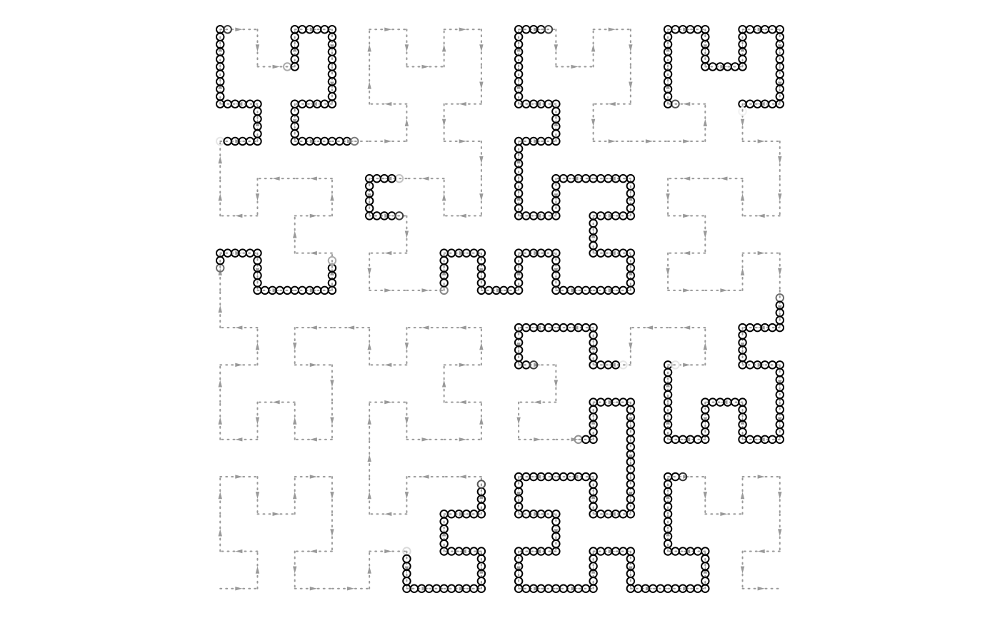
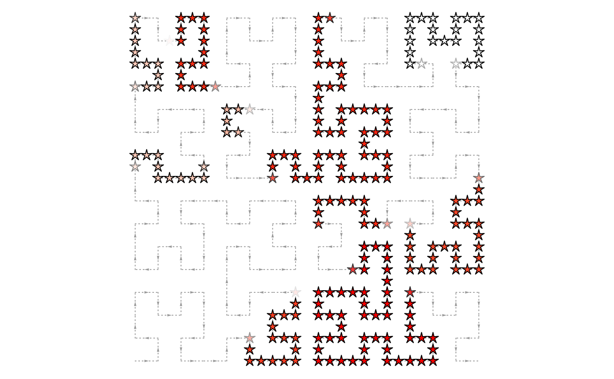
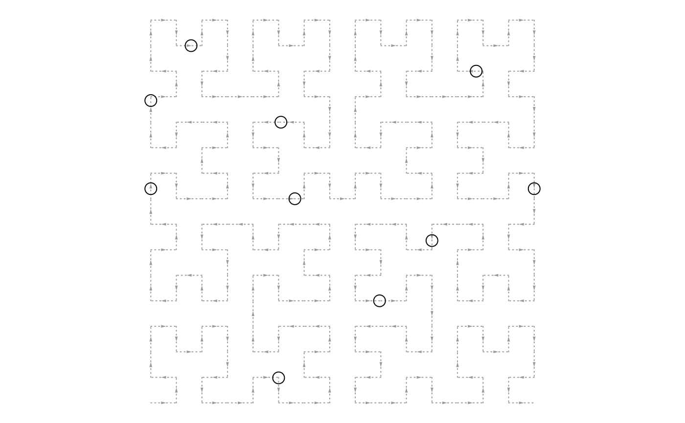
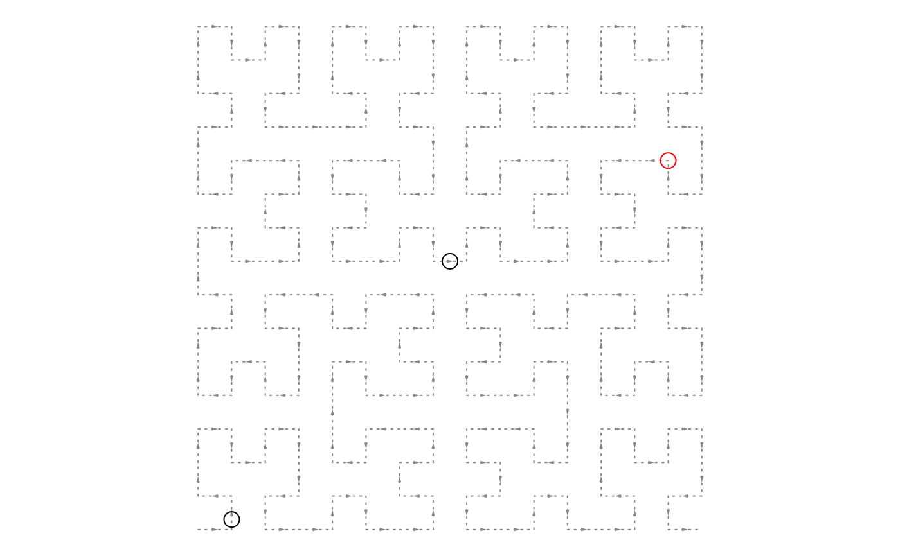

Add points to the Hilbert curve
hc_points-HilbertCurve-method.RdAdd points to the Hilbert curve
# S4 method for HilbertCurve hc_points(object, ir = NULL, x1 = NULL, x2 = x1, np = max(c(2, 10 - hc_level(object))), size = unit(1, "char"), pch = 1, gp = gpar(), mean_mode = c("w0", "absolute", "weighted"), shape = "circle")
Arguments
| object | A |
|---|---|
| ir | an |
| x1 | if start positions are not integers, they can be set by |
| x2 | if end positions are not integers, they can be set by |
| np | number of points (a circle or a square, ...) that are put in a segment. |
| size | size of the points. It should be a |
| pch | shape of points, used for points if |
| gp | graphic parameters for points. It should be specified by |
| mean_mode | when |
| shape | shape of points, used for points if |
Details
If np is set to 1 or NULL, points will be added in the middle for each interval in ir (or x1, x2).
If np is set to a value larger or equal to 2, every segment on the curve is split by np points (e.g. circles).
In this case, each point actually represent a window on the curve and when the window is not fully covered by
the input intervals, there are three different metrics to average the values in the window.
Following illustrates different settings for mean_mode:
100 80 60 values in ir
++++++ +++ +++++ ir
================ window (width = 16)
4 3 3 overlap
absolute: (100 + 80 + 60)/3
weighted: (100*4 + 80*3 + 60*3)/(4 + 3 + 3)
w0: (100*4 + 80*3 + 60*3 + 0*6)/16
So which mode to use depends on specific scenario. If the background is not of interest, absolute and weighted
modes may be proper and if the value also needs to be averaged with background, w0 is the proper choice. Section "Averaging models"
in the vignette gives a more detailed explanation for this argument.
If np >= 2, the value of np also controls the size of points.
Graphic parameters is always represented as numeric values (e.g. colors can be converted into numeric RGB values) and they will be averaged according to above rules.
Internally, it will depatch to hc_normal_points,HilbertCurve-method or hc_segmented_points,HilbertCurve-method
depending on the value of np.
Value
A data frame which contains coordinates (in the 2D space) of points.
Examples
x = sort(sample(100, 20)) s = x[1:10*2 - 1] e = x[1:10*2] require(IRanges) ir = IRanges(s, e) hc_points(hc, ir)require(circlize) value = runif(length(ir)) col_fun = colorRamp2(range(value), c("white", "red")) hc = HilbertCurve(1, 100, level = 4, reference = TRUE)